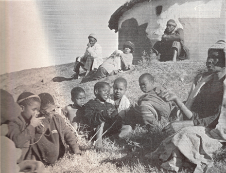

1. The ‘Oral’ Nature of African Unwritten Literature
The significance of performance in actualization, transmission, and composition. Audience and occasion. Implications for the study of oral literature. Oral art as literature.
Africa possesses both written and unwritten traditions. The former are relatively well known—at any rate the recent writings in European languages (much work remains to be publicized on earlier Arabic and local written literatures in Africa). The unwritten forms, however, are far less widely known and appreciated. Such forms do not fit neatly into the familiar categories of literate cultures, they are harder to record and present, and, for a superficial observer at least, they are easier to overlook than the corresponding written material.
The concept of an oral literature is an unfamiliar one to most people brought up in cultures which, like those of contemporary Europe, lay stress on the idea of literacy and written tradition. In the popular view it seems to convey on the one hand the idea of mystery, on the other that of crude and artistically undeveloped formulations. In fact, neither of these assumptions is generally valid. Nevertheless, there are certain definite characteristics of this form of art which arise from its oral nature, and it is important at the outset to point to the implications of these. They need to be understood before we can appreciate the status and qualities of many of these African literary forms.
It is only necessary here to speak of the relatively simple oral and literary characteristics of this literature. I am not attempting to contribute to any more ambitious generalized theory of oral literature in terms of its suggested stylistic or structural characteristics1 or of the particular type of mentality alleged to go with reliance on oral rather than written communication.2 These larger questions I leave on one side to concentrate on the more obvious properties of unwritten literature.3

Figure 3. Nongelini Masithathu Zenani, Xhosa story-teller creating a dramatic and subtle story (photo Harold Scheub).
I
There is no mystery about the first and most basic characteristic of oral literature—even though it is constantly overlooked in collections and analyses. This is the significance of the actual performance. Oral literature is by definition dependent on a performer who formulates it in words on a specific occasion—there is no other way in which it can be realized as a literary product. In the case of written literature a literary work can be said to have an independent and tangible existence in even one copy, so that questions about, say, the format, number, and publicizing of other written copies can, though not irrelevant, be treated to some extent as secondary; there is, that is, a distinction between the actual creation of a written literary form and its further transmission. The case of oral literature is different. There the connection between transmission and very existence is a much more intimate one, and questions about the means of actual communication are of the first importance—without its oral realization and direct rendition by singer or speaker, an unwritten literary piece cannot easily be said to have any continued or independent existence at all. In this respect the parallel is less to written literature than to music and dance; for these too are art forms which in the last analysis are actualized in and through their performance and, furthermore, in a sense depend on repeated performances for their continued existence.
The significance of performance in oral literature goes beyond a mere matter of definition: for the nature of the performance itself can make an important contribution to the impact of the particular literary form being exhibited. This point is obvious if we consider literary forms designed to be delivered to an audience even in more familiar literate cultures. If we take forms like a play, a sermon, ‘jazz poetry’, even something as trivial as an after-dinner witty anecdote—in all these cases the actual delivery is a significant aspect of the whole. Even though it is true that these instances may also exist in written form, they only attain their true fulfilment when actually performed.
The same clearly applies to African oral literature. In, for example, the brief Akan dirge
Amaago, won’t you look?
Won’t you look at my face?
When you are absent, we ask of you.
You have been away long: your children are waiting for you (Nketia 1955: 184)
the printed words alone represent only a shadow of the full actualization of the poem as an aesthetic experience for poet and audience. For, quite apart from the separate question of the overtones and symbolic associations of words and phrases, the actual enactment of the poem also involves the emotional situation of a funeral, the singer’s beauty of voice, her sobs, facial expression, vocal expressiveness and movements (all indicating the sincerity of her grief), and, not least, the musical setting of the poem. In fact, all the variegated aspects we think of as contributing to the effectiveness of performance in the case of more familiar literary forms may also play their part in the delivery of unwritten pieces—expressiveness of tone, gesture, facial expression, dramatic use of pause and rhythm, the interplay of passion, dignity, or humour, receptivity to the reactions of the audience, etc., etc. Such devices are not mere embellishments superadded to the already existent literary work—as we think of them in regard to written literature—but an integral as well as flexible part of its full realization as a work of art.
Unfortunately it is precisely this aspect which is most often overlooked in recording and interpreting instances of oral literature. This is partly due, no doubt, to practical difficulties; but even more to the unconscious reference constantly made by both recorders and readers to more familiar written forms. This model leads us to think of the written element as the primary and thus somehow the most fundamental material in every kind of literature—a concentration on the words to the exclusion of the vital and essential aspect of performance. It cannot be too often emphasized that this insidious model is a profoundly misleading one in the case of oral literature.
This point comes across the more forcibly when one considers the various resources available to the performer of African literary works to exploit the oral potentialities of his medium. The linguistic basis of much African literature is treated in Chapter 3; but we must at least note in passing the striking consequences of the highly tonal nature of many African languages. Tone is sometimes used as a structural element in literary expression and can be exploited by the oral artist in ways somewhat analogous to the use of rhyme or rhythm in written European poetry. Many instances of this can be cited from African poetry, proverbs, and above all drum literature. This stylistic aspect is almost completely unrepresented in written versions or studies of oral literature, and yet is clearly one which can be manipulated in a subtle and effective way in the actual process of delivery (see Ch. 3). The exploitation of musical resources can also play an important part, varying of course according to the artistic conventions of the particular genre in question. Most stories and proverbs tend to be delivered as spoken prose. But the Southern Bantu praise poems, for instance, and the Yoruba hunters’ ijala poetry are chanted in various kinds of recitative, employing a semi-musical framework. Other forms draw fully on musical resources and make use of singing by soloist or soloists, not infrequently accompanied or supplemented by a chorus or in some cases instruments. Indeed, much of what is normally classed as poetry in African oral literature is designed to be performed in a musical setting, and the musical and verbal elements are thus interdependent. An appreciation, therefore, of these sung forms (and to some extent the chanted ones also) depends on at least some awareness of the musical material on which the artist draws, and we cannot hope fully to understand their impact or subtlety if we consider only the bare words on a printed page.
In addition the performer has various visual resources at his disposal. The artist is typically face to face with his public and can take advantage of this to enhance the impact and even sometimes the content of his words. In many stories, for example, the characterization of both leading and secondary figures may appear slight; but what in literate cultures must be written, explicitly or implicitly, into the text can in orally delivered forms be conveyed by more visible means—by the speaker’s gestures, expression, and mimicry. A particular atmosphere—whether of dignity for a king’s official poet, light-hearted enjoyment for an evening story-teller, grief for a woman dirge singer—can be conveyed not only by a verbal evocation of mood but also by the dress, accoutrements, or observed bearing of the performer. This visual aspect is sometimes taken even further than gesture and dramatic bodily movement and is expressed in the form of a dance, often joined by members of the audience (or chorus). In these cases the verbal content now represents only one element in a complete opera-like performance which combines words, music, and dance. Though this extreme type is not characteristic of most forms of oral literature discussed in this volume, it is nevertheless not uncommon; and even in cases where the verbal element seems to predominate (sometimes in co-ordination with music), the actual delivery and movement of the performer may partake of something of the element of dancing in a way which to both performer and audience enhances the aesthetic effectiveness of the occasion.
Much more could be said about the many other means which the oral performer can employ to project his literary products—his use, for instance, of vivid ideophones or of dramatized dialogue, or his manipulation of the audience’s sense of humour or susceptibility (when played on by a skilled performer) to be amazed, or shocked, or moved, or enthralled at appropriate moments. But it should be clear that oral literature has somewhat different potentialities from written literature, and additional resources which the oral artist can develop for his own purposes; and that this aspect is of primary significance for its appreciation as a mode of aesthetic expression.
Figure 4. Mende performer, Sierra Leone, 1982. Note the performer’s gestures and the clapping audience/chorus, essential for the performance (photo Donald Cosentino).
The detailed way in which the performer enacts the literary product of his art naturally varies both from culture to culture and also among the different literary genres of one language. Not all types of performance involve the extremes of dramatization. Sometimes indeed the artistic conventions demand the exact opposite—a dignified aloof bearing, and emphasis on continuity of delivery rather than on studied and receptive style in the exact choice of words. This is so, for instance, of the professional reciter of historical Rwanda poetry, an official conscious of his intellectual superiority over amateurs and audience alike:
Contrairement à l’amateur, qui gesticule du corps et de la voix, le récitant professionnel adopte une attitude impassible, un débit rapide et monotone. Si 1’auditoire réagit en riant ou en exprimant son admiration pour un passage particulièrement brillant, il suspend la voix avec détachement jusqu’à ce que le silence soit rétabli.
(Coupez and Kamanzi 1962: 8)
This might seem the antithesis of a reliance on the arts of performance for the projection of the poem. In fact it is part of this particular convention and, for the audience, an essential part. To this kind of austere style of delivery we can contrast the highly emotional atmosphere in which the southern Sotho praise poet is expected to pour out his panegyric. Out of the background of song by solo and chorus, working up to a pitch of excitement and highly charged emotion,
the chorus increases in its loudness to be brought to a sudden stop with shrills of whistles and a voice (of the praise poet) is heard: ‘Ka-mo-hopola mor’a-Nyeo!’ (I remember the son of so-and-so!)
Behind that sentence lurks all the stored up emotions and without pausing, the name … is followed by an outburst of uninterrupted praises, save perhaps by a shout from one of the listeners: ‘Ke-ne ke-le teng’ (I was present) as if to lend authenticity to the narration. The praiser continues his recitation working himself to a pitch, till he jumps this way and that way while his mates cheer him … and finally when his emotion has subsided he looks at his mates and shouts: ‘Ntjeng, Banna’ (lit. Eat me, you men). After this he may burst again into another ecstasy to be stopped by a shout from him or from his friends: ‘Ha e nye bolokoe kaofela!’ or ‘Ha e nye lesolanka!’ a sign that he should stop.
(Mofokeng 1945: 137)
Different again are the styles adopted by story-tellers where there tends to be little of this sort of emotional intensity, but where the vividness and, often, humour of the delivery add drama and meaning to the relatively simple and straightforward wording. The Lamba narrator has been particularly well described:
It would need a combination of phonograph and kinematograph to reproduce a tale as it is told …. Every muscle of face and body spoke, a swift gesture often supplying the place of a whole sentence …. The animals spoke each in its own tone: the deep rumbling voice of Momba, the ground hornbill, for example, contrasting vividly with the piping accents of Sulwe, the hare …
(Smith and Dale ii, 1920: 336)
Even within the same culture there may be many set styles of performance designed to suit the different literary genres recognized in the culture. Indeed these genres are sometimes primarily distinguished from each other in terms of their media of performance rather than their content or purpose. In Yoruba poetry, for instance, the native classification is not according to subject-matter or structure but by the group to which the reciter belongs and, in particular, by the technique of recitation and voice production. Thus there is ijala (chanted by hunters in a high-pitched voice), rara (a slow, wailing type of chant), and ewi (using a falsetto voice), and even though the content of various types may often be interchangeable, a master in one genre will not feel competent to perform a different type: he may know the words but cannot manage the necessary subtleties of tone and style and the required type of voice production (Gbadamosi and Beier 1959: 9–10; Babalọla 1966: vi, 23). Many other cases could also be cited where the mode of performance is as significant for the native critic as actual content or structure.
So far we have been speaking of the importance of performance in all types of oral literature and of the way in which techniques of delivery can be variously exploited and evaluated by performer or audience. But there is a further, related, characteristic of oral literature to which we must now turn. This is the question of improvisation and original composition in general. In other words, something more may be involved in the delivery of an oral piece than the fact of its actualization and re-creation in and through the performance, aided by a technique of delivery that heightens its artistic effectiveness. There are also the cases when the performer introduces variations on older pieces or even totally new forms in terms of the detailed wording, the structure, or the content.
The extent of this kind of innovation, of course, varies with both genre and individual performer, and the question of original composition is a difficult one. It is clear that the process is by no means the same in all non-literate cultures or all types of oral literature,4 and between the extremes of totally new creation and memorized reproduction of set pieces there is scope for many different theories and practices of composition. There are, for instance, the long-considered and rehearsed compositions of Chopi singers, the more facile improvisation of a leader in a boat- or dance-song, the combination and recombination of known motifs into a single unique performance among Limba story-tellers. There are also occasional cases, like the Rwanda poet just mentioned, where there is interest in the accuracy and authenticity of the wording (at least in outline) and where memorization rather than creation is the expected role of the performer.
In spite of the very real significance of these variations, one of the striking characteristics of oral as distinct from written literature is its verbal variability. What might be called the ‘same’ poem or prose piece tends to be variable to such an extent that one has to take some account at least of the original contribution of the artist who is actualizing it—and not simply in terms of the technique of delivery. Take for instance the case of Ankole praise poems. Since the ideas expressed in these poems are stereotyped and repetitive, the omwevugi (poet/reciter) must change the wording to obtain variety.
[He] has to rely to a great extent upon the manner in which he expresses these ideas in order to give beauty and interest to his poem. Herein lies the art of the accomplished omwevugi who, by the ingenious choice of his vocabulary, can repeat identical themes time and time again, always with a different and startling turn of phrase.
(Morris 1964: 25)
Again, there is the production of stories among the Thonga. It is worth quoting Junod’s excellent description of this at some length. Having postulated the ‘antiquity’ of Thonga tales, he goes on:
This antiquity is only relative: that is to say they are constantly transformed by the narrators and their transformations go much further than is generally supposed, further even than the Natives themselves are aware of. After having heard the same stories told by different story-tellers, I must confess that I never met with exactly the same version. First of all words differ. Each narrator has his own style, speaks freely and does not feel in any way bound by the expressions used by the person who taught him the tale. It would be a great error to think that, writing a story at the dictation of a Native, we possess the recognized standard form of the tale. There is no standard at all! …
The same can be said with regard to the sequence of the episodes; although these often form definite cycles, it is rare to hear two narrators follow exactly the same order. They arrange their material as they like, sometimes in a very awkward way …
I go further: New elements are also introduced, owing to the tendency of Native story-tellers always to apply circumstances of their environment to the narration. This is one of the charms of Native tales. They are living, viz., they are not told as if they were past and remote events, in an abstract pattern, but considered as happening amongst the hearers themselves …. So all the new objects brought by civilisation are, without the slightest difficulty, made use of by the narrator ….
Lastly, my experience leads me to think that, in certain cases, the contents of the stories themselves are changed by oral transmission, this giving birth to numerous versions of a tale, often very different from each other and sometimes hardly recognizable. (Junod 1913, ii: 198–200. The whole of this passage is worth consulting)
The scope of the artist to improvise or create may vary, but there is almost always some opportunity for ‘composition’. It comes out in the exact choice of word and phrase, the stylistic devices like the use of ideophones, asides, or repetitions, the ordering of episodes or verses, new twists to familiar plots or the introduction of completely new ones, improvisation or variation of solo lines even while the chorus remains the same—as well, of course, as all the elaborations and modifications to which the musical aspect is subject. Such additions and changes naturally take place within the current literary and cultural conventions—but what is involved, nevertheless, is some degree of individual creativity.5 With only a few exceptions, this process is likely to enter into the actualization of any piece of oral literature, which thus becomes in one sense a unique literary work—the work rendered on one particular occasion.
The variability typical of oral literary forms has tended to be overlooked by many writers. This is largely because of certain theoretical assumptions held in the past about the verbatim handing down of oral tradition supposedly typical of non-literate societies. The model of written literature has also been misleading in this context, with its concept of exact transmission through manuscripts or printing press. It must therefore be stressed yet again that many of the characteristics we now associate with a written literary tradition do not always apply to oral art. There is not necessarily any concept of an ‘authentic version’, and when a particular literary piece is being transmitted to an audience the concepts of extemporization or elaboration are often more likely to be to the fore than that of memorization. There is likely to be little of the split, familiar from written forms, between composition and performance or between creation and transmission. A failure to realize this has led to many misconceptions—in particular the presentation of one version as the correct and authentic one—and to only a partial understanding of the crucial contribution made by the performer himself.
A further essential factor is the audience, which, as is not the case with written forms, is often directly involved in the actualization and creation of a piece of oral literature. According to convention, genre, and personality, the artist may be more or less receptive to his listeners’ reactions—but, with few exceptions,6 an audience of some kind is normally an essential part of the whole literary situation. There is no escape for the oral artist from a face-to-face confrontation with his audience, and this is something which he can exploit as well as be influenced by. Sometimes he chooses to involve his listeners directly, as in story-telling situations where it is common for the narrator to open with a formula which explicitly arouses his audience’s attention; he also often expects them to participate actively in the narration and, in particular, to join in the choruses of songs which he introduces into the narrative.7 The audience can be exploited in similar ways in the performance of poetry, particularly in sung lyrics where it is common practice for the poet to act as leader, singing and improvising the verse line, while the audience performs as a chorus keeping up the burden of the song, sometimes to the accompaniment of dancing or instrumental music. In such cases the close connection between artist and audience can almost turn into an identity, the chorus directly participating in at least certain parts of the performance.
Even in less formalized relationships the actual literary expression can be greatly affected by the presence and reactions of the audience. For one thing, the type of audience involved can affect the presentation of an oral piece—the artist may tend, for instance, to omit obscenities, certain types of jokes, or complex forms in the presence of, say, children or missionaries (or even foreign students) which he would include in other contexts. And direct references to the characteristics, behaviour, or fortunes of particular listeners can also be brought in with great effectiveness in a subtle and flexible way not usually open to written literature. Members of the audience too need not confine their participation to silent listening or a mere acceptance of the chief performer’s invitation to participate—they may also in some circumstances break into the performance with additions, queries, or even criticisms. This is common not only in the typical and expected case of story-telling but even in such formalized situations as that of the complex Yoruba ijala chants. A performance by one ijala artist is critically listened to by other experts present, and if one thinks the performer has made a mistake he cuts in with such words as
I beg to differ; that is not correct.
You have deviated from the path of accuracy …
Ire was not Ogun’s home town.
Ogun only called there to drink palm-wine …
to which the performer may try to defend himself by pleading his own knowledge or suggesting that others should respect his integrity:
Let not the civet-cat trespass on the cane rat’s track.
Let the cane rat avoid trespassing on the civet-cat’s path.
Let each animal follow the smooth path of its own road.
(Babalola 1966: 64, 62)
This possibility of both clarification and challenge from members of the audience and their effect on the performance is indeed one of the main distinctions between oral and written literary pieces. As Plato put it long ago: ‘It is the same with written words [as with painting]. You would think they were speaking as if they were intelligent, but if you ask them about what they are saying and want to learn [more], they just go on saying one and the same thing for ever’ (Phaedrus, 275d). This leads on to a further important characteristic of oral literature: the significance of the actual occasion, which can directly affect the detailed content and form of the piece being performed. Oral pieces are not composed in the study and later transmitted through the impersonal and detached medium of print, but tend to be directly involved in the occasions of their actual utterance. Some of the poetry to be discussed in this volume is specifically ‘occasional’, in that it is designed for and arises from particular situations like funerals, weddings, celebrations of victory, soothing a baby, accompanying work, and so on; again, with certain prose forms (like, for instance, proverbs), appropriateness to the occasion may be more highly valued by local critics than the verbal content itself. But even when there is not this specific connection, a piece of oral literature tends to be affected by such factors as the general purpose and atmosphere of the gathering at which it is rendered, recent episodes in the minds of performer and audience, or even the time of year and propinquity of the harvest. Many oral recitations arise in response to various social obligations which, in turn, are exploited by poet and narrator for his own purposes. The performer of oral pieces could thus be said to be more involved in actual social situations than the writer in more familiar literate traditions.
II
These characteristic qualities of oral literary forms have several implications for the study of oral literature. It is always essential to raise points which would seem only secondary in the case of written literature—questions about the details of performance, audience, and occasion. To ignore these in an oral work is to risk missing much of the subtlety, flexibility, and individual originality of its creator and, furthermore, to fail to give consideration to the aesthetic canons of those intimately concerned in the production and the reception of this form of literature.
This is easy enough to state—but such implications are exceedingly difficult to pursue. Not only is there the seductive model of written literature which constantly tempts one to set aside such questions for the more familiar textual analysis; there are also practical difficulties to surmount. The words themselves are relatively easy to record (even though this is often not done with much scholarly rigour): one can use dictation, texts written by assistants, or recordings on tape. But for the all-important aspect of the actual performance—how is one to record this? Even more difficult, how is one to convey it to readers not themselves acquainted with this art form? In the days before the availability of the portable tape-recorder this problem was practically insuperable.8 The general tendency was thus for the early scholars to rely only on written records of the oral literature they collected. In many cases, furthermore, they were using quite inadequate sources, perhaps second-hand (so that they themselves had not direct experience of the actual performance involved), or in synopsis only with the artistic elaborations or repetitions omitted. This in itself goes a long way to account for the very simplified impression of African oral literature we often receive from these collections (particularly when it is remembered that they emphasized prose narrative rather than the more elaborate and difficult poetic forms). This was all the more unfortunate because the common practice of concentrating on the texts only encouraged others to follow the same pattern even when it became open to them to use new media for recording.
By now there is an increasing, though by no means universal, reliance on the tape-recorder by serious students of African oral literature. This medium has helped immensely in solving some of the problems of recording details of the performance. But the visual effects produced by the artist still tend to elude record. Furthermore, the problem of communicating the style of performance to a wider audience is still a real one: few if any publishers are prepared to include recordings with their collections of published texts. Thus the public is still given the impression of African oral literature as a kind of written literature manqué—apparently lacking the elaboration of wording and recognizability of associations known from familiar forms, and without the particular stylistic devices peculiar to oral forms being made clear.
Even when the importance of performance is stressed in general terms, more needs to be said to convey the particular style and flavour of any given genre. A full appreciation must depend on an analysis not only of the verbal interplay and overtones in the piece, its stylistic structure and content, but also of the various detailed devices which the performer has at his disposal to convey his product to the audience, and the varying ways these are used by different individuals. Something also needs to be said of the role and status of the composer/performer who is the one to communicate this oral art directly to his public, the variant forms that arise according to audience and occasion, the reactions and participation likely to be forthcoming from his listeners and spectators, the respective contributions, if any, of musical or balletic elements, and finally the social contexts in which this creation and re-creation takes place.
All these factors are far more difficult to discover and describe than a mere transcription of the texts themselves, followed by their leisured analysis. It is not surprising that most editions of oral art concentrate on the textual aspect and say little or nothing about the other factors. But, difficult or not, without the inclusion of some consideration of such questions we have scarcely started to understand its aesthetic development as a product of literary artistry.
Various questionable assumptions about the nature of oral tradition and so-called ‘folk art’ among non-literate people have not made matters any easier. Several of these theories are discussed in some detail in later chapters, but briefly they include such ideas as that ‘oral tradition’ (including what we should now call oral literature) is passed down word for word from generation to generation and thus reproduced verbatim from memory throughout the centuries; or, alternatively, that oral literature is something that arises communally, from the people or the ‘folk’ as a whole, so that there can be no question of individual authorship or originality. It can be seen how both these assumptions have inevitably discouraged interest in the actual contemporaneous performance, variations, and the role of the individual poet or narrator in the final literary product. A related assumption was that oral literature (often in this context called ‘folklore’) was relatively undeveloped and primitive; and this derogatory interpretation was applied to oral literature both in completely non-literate societies and when it coexisted with written literary forms in ‘civilized’ cultures. This opinion received apparent confirmation from the appearance of bare prose texts in translation or synopsis, and people felt no need to enter into more profound analysis about, say, the overtones and artistic conventions underlying these texts, far less the individual contribution of performer and composer. There was thus no need for further elucidation, for it was assumed in advance that little of real interest could emerge from this ‘inherently crude’ oral medium.
There are also various other special difficulties about the presentation of African oral literature—how, for instance, to delimit literary from everyday speech forms or convey the subtleties or overtones which only emerge fully to one familiar with the cultural and literary traditions of the society. But these do not arise directly from the oral nature of African literature and will thus be more suitably discussed later. The main point I want to reiterate here, the more emphatically because of the way it has so often been overlooked in the past, is that in the case of oral literature, far more extremely than with written forms, the bare words can not be left to speak for themselves, for the simple reason that in the actual literary work so much else is necessarily and intimately involved. With this type of literature a knowledge of the whole literary and social background, covering these various points of performance, audience, and context, is, however difficult, of the first importance. Even if some of the practical problems of recording and presenting these points sometimes appear insoluble, it is at least necessary to be aware of these problems from the outset, rather than, as so commonly happens, substituting for an awareness of the shallowness of our own understanding an imaginary picture of the shallowness in literary appreciation and development of the peoples we are attempting to study.
III
So far we have been concentrating on the oral aspect of African unwritten literature—the implications of this for the nature of such literature and the difficulties of presentation and analysis to which it gives rise. Little has yet been said about the literary status of these oral products, and we have indeed been begging the question of how far these can in fact be regarded as a type of literature at all.
Various positions have been taken up on this question. A number of the scholars who have carried out extensive studies of the oral art of non-literate peoples are quite dogmatic about the suitability of the term ‘literature’. N. K. Chadwick, for one, is explicit on this point:
In ‘civilised’ countries we are inclined to associate literature with writing; but such an association is accidental …. Millions of people throughout Asia, Polynesia, Africa and even Europe who practise the art of literature have no knowledge of letters. Writing is unessential to either the composition or the preservation of literature. The two arts are wholly distinct.
(Chadwick 1939: 77)
This general view is supported, by implication at least, by the many writers who have referred to their collections or descriptions of oral forms by such terms as ‘oral literature’, ‘unwritten literature’, or sometimes ‘popular’ or ‘traditional literature’.9 The opposite viewpoint, however, also seems to carry weight. There is, for one thing, the association, both popular and etymological, between ‘literature’ and letters or writing. The fact, furthermore, that oral art depends for its creation on the actual (and thus ephemeral) performance of it seems to some to disqualify it from true literary status, so that other terms like ‘folk art’, ‘folklore’, or ‘verbal art’ appear more accurate designations. Added to this is the alleged practicality so often supposed to be the root of ‘primitive art forms’. According to this view, even if some primitive formulation, say a story, might seem in outward form, style, or content to present a superficial resemblance to a written work of fiction, in essentials, being fundamentally pragmatic rather than aesthetic, it is something wholly different. Finally, individual authorship is often presumed not to be in question in the case of oral forms, being replaced, according to current fashions, by such supposed entities as ‘the group mind’, ‘the folk’, ‘social structure’, or simply ‘tradition’, all of which equally result in a finished product with a totally different basis and orientation from that of written literature. This kind of view, then, would draw a basic distinction between, on the one hand, the products of a written literary tradition and, on the other, most if not all of the instances of verbal art included in this and similar volumes.
In this controversy, my own position is clearly implied in both my title and the discussion so far. It is that, despite difficulties of exact delimitation and presentation, the main body of the material I discuss and illustrate in this volume falls within the domain of literature (the class of literature I call ‘oral literature’); and that it is misleading as well as unfruitful to attempt to draw a strict line between the verbal art of literate and of non-literate cultural traditions.
In part this approach is an arbitrary one. It is, after all, open to anyone to produce a wide enough definition of ‘literature’ for all the examples produced here to fit within its limits—or a narrower one to exclude them. But it is also adopted because it has been found that to approach instances of oral art as literary forms and thus proceed to ask about them the same kind of questions we might raise in the case of written literature, has in fact been a productive approach leading to both further appreciation of the oral forms and a deeper understanding of their role in society. Such an approach then is in principle its own justification—how justifiable it in fact turns out to be in leading to greater insight can be left to the readers of this book to judge.10 But there is also more to this view than whether or not it is a fruitful one. It seems to me to bear more relation to the empirical facts than its opposite in that many of the apparent reasons for the supposed cleavage between oral and written forms have in fact rested on mistaken assumptions. So, even though I am not attempting to put forward any new definition or theory of literature—an attempt likely to raise as many difficulties as it solves—some of these misleading points should be clarified at this stage.11
The first point can be easily disposed of. The etymological connections between literature and writing may seem at first a clear validation for limiting the term to literate cultures. But even if we are prepared to be coerced by etymologies (and why should we, unless to rationalize already held assumptions?), we must admit that this association by no means exists in all languages—we need only mention the German Wortkunst or Russian slovesnost (as pointed out in Wellek and Warren 1949: 11)—so it can hardly be said to have universal validity.
The fact of a positive and strongly held popular association between writing and literature is more difficult to deal with. Current prejudices may be false, but they go deep. And this is especially so when they are securely rooted in particular historical and cultural experiences, so that the familiar and traditional forms of a given culture come to be regarded as the natural and universal ones, expected to hold good for all times and places. This kind of ethnocentric preconception has had to be revised by scholars in other spheres such as, for instance, the study of modes of political organization or religious practices, as they are viewed in the light of wider research and thus greater comparative perspective. This, it seems now, may also be the case with the study of literature. In spite of the natural reluctance to regard very different verbal forms as of ultimately the same nature as our own familiar types, we have at least to consider the possibility that the literary models of (in effect) a few centuries in the Western world, which happen to be based on writing and more especially on printing, may not in fact exhaust all the possibilities of literature.
Figure 5. Dancers from Oyo, south West Nigeria, 1970 (photo David Murray).
This possibility can be rendered more intelligible by considering further the relationship between oral and written literature. It becomes clear that this is a difference of degree and not of kind: there are many different gradations between what one could take as the oral and the printed ideal types of literature. It is perhaps enough to allude to the literature of the classical world which, as is well known, laid far more stress on the oral aspect than does more recent literature. Even laying aside the famous and controversial question of the possible oral composition of Homer’s great epics (universally passed as ‘literature’), we can see that the presence of writing can coexist with an emphasis on the significance of performance as one of the main means of the effective transmission of a literary work. For the Greeks there was a close association between words, music, and dance—one which seems much less obvious to a modern European—and Aristotle, still accepted as one of the great literary critics, can give as his first reason for considering tragedy superior to epic the fact that it makes an additional impact through music and visual effects (Poetics, 1462a). Throughout much of antiquity even written works were normally read aloud rather than silently, and one means of transmitting and, as it were, ‘publishing’ a literary composition was to deliver it aloud to a group of friends. In such cases the relationship of the performance and transmission of literary works to the content is not totally dissimilar from that in African oral literature.
What is true of classical literature is also true of many cultures in which writing is practised as a specialist rather than a universal art and, in particular, in societies without the printing-press to make the multiplication of copies feasible. We are so accustomed, at our present stage of history, to associate the written word with print that we tend to forget that the mere fact of writing does not necessarily involve the type of detachment and relatively impersonal mode of transmission that we connect with printing. Transmission by reading aloud or by performing from memory (sometimes accompanied by improvisation) is not at all incompatible with some reliance on writing—a situation we find not only in earlier European societies12 but also in a few of the African instances described later (Ch. 3, Ch. 7). Here again the contrast between fully oral forms on the one hand and the impersonal medium of print on the other is clearly only a relative one: we would hardly suggest that works written and, in part, orally transmitted before the advent of printing were therefore not literature, any more than we would be prepared to state dogmatically that the Homeric epics—or an African poem—only became literature on the day they were first written down.
Even in a society apparently dominated by the printed word the oral aspect is not entirely lost. Perhaps because of the common idea that written literature is somehow the highest form of the arts, the current significance of oral elements often tends to be played down, if not overlooked completely. But we can point to the importance of performance and production in a play, the idea held by some at least that much poetry can only attain its full flavour when spoken aloud, or the increasing but often underestimated significance of the oral reproduction and dissemination of classic literary forms (as well as wholly new compositions) through radio and television. Add to this the interplay between the oral and the written—the constant interaction in any tradition between the written word and, at the least, the common diction of everyday speech (an interaction which may well be heightened by the spreading reliance on radio and television channels of transmission), as well as the largely oral forms like speeches, sermons, children’s rhymes, satires depending in part on improvisation, or many current pop songs, all of which have both literary and oral elements—in view of all this it becomes clear that even in a fully literate culture oral formulations can play a real part, however unrecognized, in the literary scene as a whole.
Even so brief an account suggests that our current preoccupation with written, particularly printed, media may give only a limited view and that the distinction between oral and written forms may not be so rigid and so profound as is often implied. It is already widely accepted that these two media can each draw on the products of the other, for orally transmitted forms have frequently been adopted or adapted in written literature, and oral literature too is prepared to draw on any source, including the written word. To this interplay we can now add the fact that when looked at comparatively, the two forms, oral and written, are not so mutually exclusive as is sometimes imagined. Even if we picture them as two independent extremes we can see that in practice there are many possibilities and many different stages between the two poles and that the facile assumption of a profound and unbridgeable chasm between oral and written forms is a misleading one.
Some further misconceptions about the nature of oral forms must be mentioned briefly here; they will be taken up further in the main body of the book. First, the idea that all primitive (and thus also all oral) art is severely functional, and thus basically different from art in ‘civilized’ cultures. To this it must be replied that this whole argument partly arises from a particular and temporary fashion in the interpretation of art (the rather unclear idea of ‘art for art’s sake’); that since there is little detailed empirical evidence on the various purposes of particular genres of oral literature—it was much easier to write down texts and presume functions than to make detailed inquiries about the local canons of literary criticism—this assertion rests as much on presupposition as on observed fact; and, finally, that the whole argument is partly just a matter of words. How far and in what sense and for whom a given piece of literature is ‘functional’ and just how one assesses this is as difficult a question in non-literate as in literate cultures. Certainly we can say that even when we can find a clear social purpose (and the ‘occasional’ aspect in oral literature varies according to genre, composer, and situation just as it does in written literature), this by no means necessarily excludes an interest in aesthetic as well as functional considerations.
The question of authorship in oral literature has already been mentioned in the context of performance and of the composition that arises from this. By now, few people probably take very seriously the concept of the ‘group mind’ or the ‘folk mind’ as an empirical entity to which the authorship of particular literary pieces could be assigned. But in the case of the oral literature of basically unfamiliar cultures this idea acquires an apparent validity mainly from ignorance of the actual circumstances involved. Again, this is a large question that cannot be pursued in detail here. But it can be said categorically that while oral literature—like all literature—in a sense arises from society and, being oral, has the extra facet of often involving more direct interplay between composer and audience, nevertheless it is totally misleading to suggest that individual originality and imagination play no part. The exact form this takes and the exact degree of the familiar balance between tradition and creativity naturally vary with the culture, the genre, and the personalities involved. But it will be clear from the instances in this volume that the myth attributing all oral literature either to the ‘community’ alone or, alternatively, to one particular portion of it (‘the folk’) is not true to the facts; and that the whole picture is much more complex than such simplified and speculative assumptions would suggest.
A final point which has, I think, wrongly deterred people from the recognition of oral forms as a type of literature has been the idea that they have only resulted in trivial formulations without any depth of meaning or association. This impression has, it is true, been given by the selection and presentation of much of the African verbal art that reaches the public—the emphasis on animal tales and other light-hearted stories (relatively easy to record) rather than the more elaborate creations of the specialist poets; and the common publication of unannotated texts which give the reader no idea whatsoever of the social and literary background which lies behind them, let alone the arts of the performer. Quite apart from mere problems of translation, the difficulties of appreciating the art forms of unfamiliar cultures without help are well known. We need only consider—to take just one example—how much our appreciation of
Like as the waves make towards the pebbled shore,
So do our minutes hasten to their end …
depends, among other things, on our knowledge of the particular art form used, its whole literary setting, the rhythm, phrasing, and music of the line, and, not least, on the emotive overtones of such familiar words as ‘waves’, ‘minutes’, ‘end’ which bring us a whole realm of associations, sounds, and pictures, all of which can be said to form an essential part of the meaning of the line. This is obvious—but it is often forgotten that exactly the same thing applies in oral literature:
Grandsire Gyima with a slim but generous arm
(Nana Gyima abasateaa a adoes wo mu).
(Nketia 1955: 195, 245)
is the first line of an Akan dirge, and seems of itself to have little poetic force or meaning. But its significance appears very different when we know the overtones of the concept of generosity, metaphorically expressed here through the familiar concept of the dead man’s ‘arm’; the particular style and structure, so pleasing and acceptable to the audience; the rhythm and quasi-musical setting of the line; the familiarity and associations of the phrasing; the known fact that this is a mother singing for her dead son whom she is calling her ‘grandsire’ in the verse; and the grief-laden and emotional atmosphere in which these dirges are performed and received—all this makes such a line, and the poem that follows and builds on it, something far from trivial to its Akan listeners. Akan dirges are among the few African literary genres that have as yet been subject to any full treatment along these lines (Nketia 1955; see also Ch. 6 below) but there is reason to suppose that similar discussions of other genres would also reveal ample evidence that the charge of triviality in oral literature as a whole rests far more on ignorance and unfamiliarity than on any close acquaintance with the facts.
There is one further problem that should be mentioned here. This is the difficult question of how to distinguish in wholly oral communication between what is to count as literature and what is not. Are we to include, say, speeches by court elders summing up cases, an impromptu prayer, non-innovatory genres like some formulaic hunting-songs, formal words of welcome, or the dramatic reporting of an item of news?
This is a real problem to which there is no easy solution. However, it has to be said at once that despite first impressions there is no difference in principle here between written and unwritten literature. In written forms too there are problems in delimiting what is truly ‘literature’. It is largely a matter of opinion, for example, as to whether we should include science fiction, certain newspaper articles, or the words of popular songs. Opinions differ, furthermore, not only between different individuals and different age and social groups, but at different periods of history. The problem, clearly, is not unique to oral literature.
In considering this question, the criteria used in relation to oral literature are much the same as in the case of written literature. First, some cases are clear-cut. These are instances when the accepted characteristics of ‘literature’13 are clearly applicable, or where the African examples are clearly comparable with literary genres recognized in familiar European cultures. In other words, once the concept of an oral literature is allowed, there will be no dispute over such cases as panegyric poetry, lyrics for songs, fictional narratives, or funeral elegies. Other cases are not so clear. Here at least one criterion must be the evaluation of the particular societies involved—we cannot assume a priori that their definitions of ‘literary’ will necessarily coincide with those of English culture. Since the evaluation of some form as literature is, as we have seen, a matter of opinion, it seems reasonable at least to take seriously the local opinions on this. Thus when we are told that among the Ibo ‘oratory … calls for an original and individual talent and … belongs to a higher order [than folk-tales]’, this ought to incline us to consider including at least some rhetorical speeches as a part of Ibo oral literature (although among other societies with less interest in oratory this may not be the case). Again, proverbs are sometimes locally thought to be as serious and ‘literary’ as more lengthy forms—and in some cases are even expanded into long proverb-poems, as with the ‘drum proverbs’ of the Akan. Finally we have verbal forms that are clearly marginal: obviously not ‘literature’ in their own right, and yet not irrelevant to literary formulation and composition. We could instance metaphorical names, elaborate greeting forms, the serious art of conversation, and, in some cases, proverbs or rhetoric. As described in Chapter 16, these show an appreciation of the artistic aspect of language and a rich background from which more purely literary forms arise—a relationship perhaps particularly obvious in the case of oral literature, but not unknown to literate cultures. The plan of the central portion of this book14 is to proceed from the clearly ‘literary’ forms through more questionable cases like proverbs or riddles to the marginally relevant forms like names or wordplay. There is no one point at which I would draw a definite dividing line, even though one extreme is clearly literary, the other not.
Earlier I made the negative point that many of the assumptions that seem to set oral forms totally apart from written literature are in fact questionable or false. The same point can be put more positively. Oral literary forms fall within most definitions of ‘literature’ (save only for the point about writing as a medium, not always included in such definitions), and the problems arising from most of these apply to oral as well as to written literary forms. In other words, though I am not putting forward any one particular definition of ‘literature’, it seems clear that the elements out of which such definitions tend, variously, to be constructed are also recognizable in oral forms, often with exactly the same range of ambiguities. The basic medium is words—though in both cases this verbal element may be supplemented by visual or musical elements. Beyond this, literature, we are often told, is expressive rather than instrumental, is aesthetic and characterized by a lack of practical purpose—a description equally applicable to much oral art. The exploitation of form, heightening of style, and interest in the medium for its own sake as well as for its descriptive function can clearly be found in oral literary forms. So too can the idea of accepted literary conventions of style, structure, and genre laid down by tradition, which are followed by the second-rate and exploited by the original author. The sense in which literature is set at one remove from reality is another familiar element: this too is recognizable in oral literature, not merely in such obvious ways as in the use of fiction, satire, or parable, but also through the very conventionality of the literary forms allied to the imaginative formulation in actual words. If we prefer to rely on an ostensive type of definition and list the kind of genres we would include under the heading of ‘literature’, this procedure gives us many analogies in oral literature (though we may find that we have to add a few not familiar in recent European literature). Among African oral genres, for instance, we can find forms analogous to European elegies, panegyric poetry, lyric, religious poetry, fictional prose, rhetoric, topical epigram, and perhaps drama. Whichever approach we adopt we shall run into some difficulties and unclear cases—in the case of oral literature the problem of delimiting literary from everyday spoken forms is a peculiarly difficult one which I do not think I have solved successfully here—but the point I want to stress is that these difficulties are fundamentally the same as those that arise in the study of any kind of literature.15
This argument tends to the conclusion that there is no good reason to deny the title of ‘literature’ to corresponding African forms just because they happen to be oral. If we do treat them as fundamentally of a different kind, we deny ourselves both a fruitful analytic approach and, furthermore, a wider perspective on the general subject of comparative literature. We need of course to remember that oral literature is only one type of literature, a type characterized by particular features to do with performance, transmission, and social context with the various implications these have for its study. But for all these differences, the view that there is no essential chasm between this type of literature and the more familiar written forms is a basic assumption throughout this book.
Footnotes
1On which see e.g. Jousse 1924; Lord 1960; Propp 1958; cf. Olrik’s ‘epic laws’, 1965.
2e.g. Lévi-Strauss 1966; cf. also the discussion and references in Goody and Watt 1963.
3For the general discussion in this chapter see particularly the valuable brief article by Bascom in JAF 1955, also Chadwicks 1932–40 (especially vol. iii) and Chadwick 1939. Some of the more detailed theories which have affected the study of African oral literature are discussed in Ch. 2.
4On some of the many variations in the forms of composition (including musical composition) among different peoples see Nettl 1954b and 1956: esp. pp. 12ff.
5For instances of this see the various examples in Parts II and III and in particular the discussion in Ch. 9, pp. 266ff.
6e.g. the solitary working songs, some herding songs, sometimes individual rehearsals for later performance, and perhaps some of the lullabies.
7For further details on audience participation in stories see Ch. 13, pp. 385ff.
8A few early observers speak of recording certain of their texts on ‘the phonograph’. See e.g. Torrend 1921 (Northern Rhodesian stories, including songs); Thomas 1910 ii (Edo); Lindblom iii, 1934: 41 (Kamba songs, recorded about 1912).
9For early approaches of this kind see Ch. 2.
10Or, better, to the readers of such original and detailed studies as e.g. Nketia 1955 etc., Babalola 1966, Kagame 1951b.
11Several of them are more fully elaborated in later chapters, particularly Ch. 2.
12See for instance H. J. Chaytor’s pertinent comment on medieval vernacular literature: ‘In short, the history of the progress from script to print is a history of the gradual substitution of visual for auditory methods of communicating and receiving ideas … To disregard the matter and to criticise medieval literature as though it had just been issued by the nearest circulating library is a sure and certain road to a misconception of the medieval spirit’ (1945: 4). The oral aspects of manuscript culture are further discussed in McLuhan 1962.
13See below
14In particular Parts II and III.
15For some further discussion of the question of African oral forms as ‘literature’ see Whiteley 1964: 4ff. and references given there.